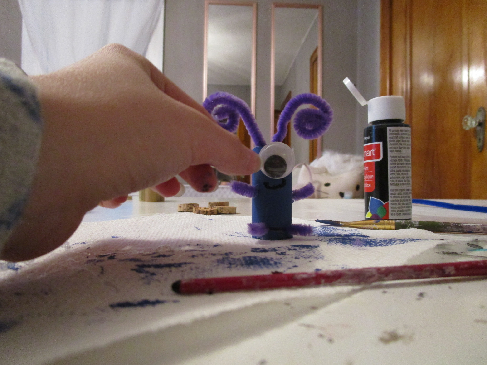

if you would like to know how to make an adorable bug craft, keep on reading :)

Paint the corks.
Let the paint dry and find a new activity.
(If you like hairstyling do the
fishtail braid tutorial)
I spent this time with my cat, Milo.
Glue on two small pipe cleaners on the top of the cork,
this will eventually be the bottom part of your bug.
Glue the small cork onto the legs.
Glue on 2 small pipe cleaner pieces to be the arms.

Make the antennae and glue them on the top of your cork.
Using the end of a paintbrush, draw a little smile for your bug.
Glue on a big googly eye.
